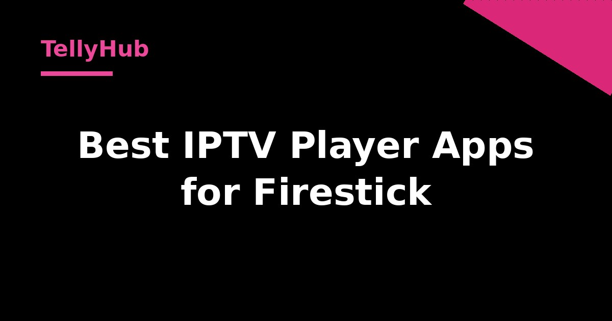

What to compare before choosing a player for live channels and catch-up.
Player versus subscription
A player is the app that displays your service. It does not normally include channels on its own. Your IPTV UK subscription provides the channels; the player is the remote control, guide and screen they appear on.
That distinction matters when comparing apps. A beautiful player with no service behind it shows nothing, and the best service can feel clumsy inside a player that does not suit your remote.
Useful features
Look for EPG support, favourites, search, parental controls, external-player options and a layout that works well with the Firestick remote. A good guide, a quick way back to your favourites, and a search that actually finds channels are the features people use every day.
Catch-up support and a clear way to switch between live TV and on-demand matter too. If your household watches films as much as live sport, check how the player handles both before settling.
Keep it lightweight
Older Firesticks benefit from simpler apps and regular cache clearing. Leave space for system updates, and remove apps you no longer open.
A player that looks impressive on a new device can feel slow on an older stick. If the interface lags, a simpler player is usually the better choice, even if it has fewer flourishes.
Choose supported software
Use the app recommended for your account so setup help matches the screens you see. When a guide says press this button and your screen shows something else, support gets harder for everyone.
Popular players you may come across include TiviMate and IPTV Smarters. They are only examples — the right choice is the one your provider supports and that runs well on your device.
A shortlist of things to compare
Before choosing, compare: guide quality, favourites and search, parental controls, catch-up support, remote-friendliness, update frequency, and how much storage it needs.
Then test it during the trial. A player that feels natural in the first evening is worth more than a feature list that looks good on paper.
Questions about this guide
Usually not. The player displays the service your subscription provides. You still need a subscription and login details.
Many have a free tier with a paid option for extra features. Check what the free version limits before paying.
Use the player recommended for your account, so setup help matches the screens you see.
Next steps
Check your setup during the 24-hour trial, then ask Blaster TV UK for help with the exact device and app you are using.